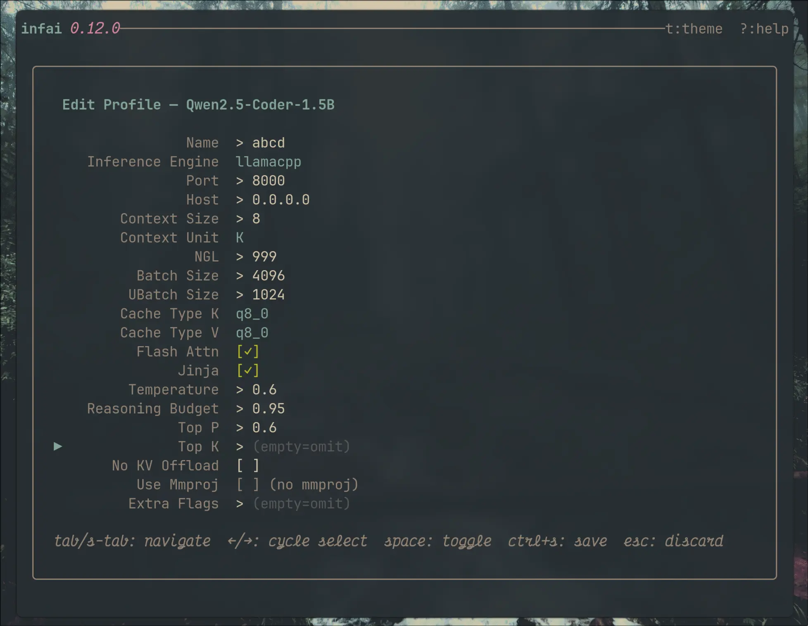
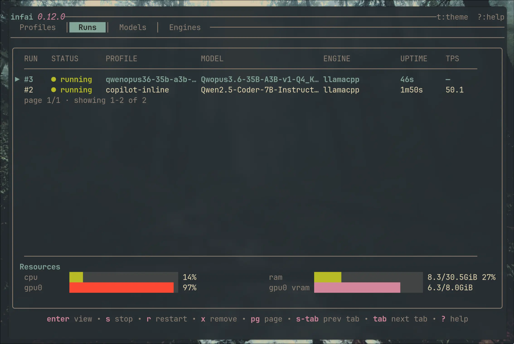

infai is a lightweight harness for local inference. It auto-detects your models,
manages complex configurations, and launches fast.
One-click profiles. Persistent settings. Real-time metrics. No flag soup.
Every local LLM session starts the same way: scrolling through shell history, fixing a typo, forgetting a flag.
$ llama-server \
-m ~/models/qwen2.5-7b-q4_k_m.gguf \
--ctx-size 65536 \
--n-gpu-layers 99 \
--batch-size 2048 \
--ubatch-size 512 \
--flash-attn \
--host 0.0.0.0 \
--port 8080
Every. Single. Time.
$ infai
# select model, press enter. that's it.
Profiles remember everything. You just pick and run.
Name your profile, set context size, GPU layers, batch parameters, flash attention, quantization type. Save it once and relaunch in seconds.

Built-in viewport streams logs plus system/model metrics in real-time. Stop, restart, or switch models without leaving the TUI.

The system remembers your complex flags, not you. Configure once, reuse instantly.
Point at your directories. infai indexes GGUF files and sets them up instantly.
Switch between context sizes, quantizations, or backends in seconds. Run directly on your hardware.
Real-time viewport with process and system telemetry. No tmux splits or second monitor needed.
Tokyonight, Everforest, One Dark, Rose Pine, Gruvbox. Match your terminal's vibe.
One database. No scattered dotfiles, no YAML, no env vars. Everything in one place.
Select model. Press enter. Server starts. That's the whole workflow.
You invested in the hardware. Stop wasting time on the flags.
llama.cpp today. Your single control plane for all local inference tomorrow.
GGUF auto-detect, launch profiles, live logs, 5 themes
Live system and model CPU, memory, and GPU telemetry in the run screen
HuggingFace SafeTensors and Apple MLX architectures
Production-grade batched inference management